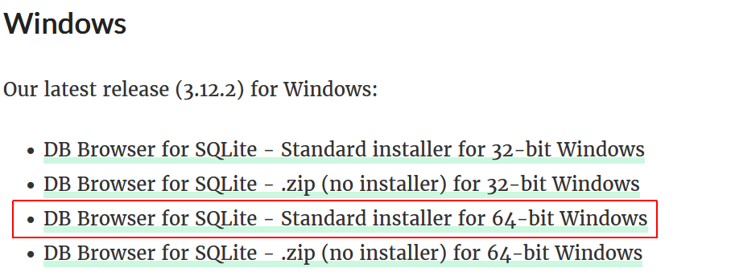
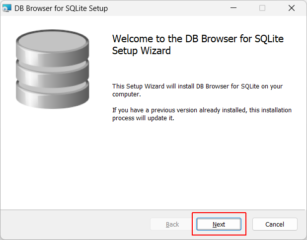
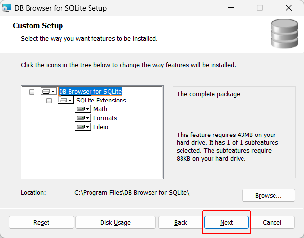
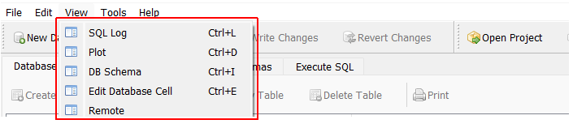

Learning Goals
At the end of this Tutorial, you will be able to:
- Download and install a visual interface for designing and editing database files compatible with SQLite.
- Customise the interface elements of DB Browser.
About DB Browser for SQLite
SDB Browser for SQLite (DB4S) is a high quality, visual, open source tool to create, design, and edit database files compatible with SQLite.
DB4S is for users and developers who want to create, search, and edit databases. DB4S uses a familiar spreadsheet-like interface, and complicated SQL commands do not have to be learned.
- Create and compact database files
- Create, define, modify and delete tables
- Create, define, and delete indexes
- Browse, edit, add, and delete records
- Search records
- Import and export records as text
- Import and export tables from/to CSV files
- Import and export databases from/to SQL dump files
- Issue SQL queries and inspect the results
- Examine a log of all SQL commands issued by the application
- Plot simple graphs based on table or query data
Installing DB Browser on Windows 11
Follow the steps below:
- Go to the DB Browser for SQLite Page and download the following installer file. 
- Double-click the downloaded file to launch the installation wizard. When asked to allow the app to make changes to your PC, click Yes. 
- Click Next, accept the licence conditions, and then click Next again.
- Accept or amend the location where you want to install the app, and click Next.
- When prompted to which components you want to install, accept the default options and click Next. 
- As preferred, add the app to your Start menu and/or as a desktop icon, and click Next.
- Click Install to continue and finally Finish.
You now have DB Browser for SQLite installed on your Windows 11 PC, ready for you to create, view, and manage SQLite databases.
Customising the interface elements
Follow the steps below to remove default interface elements you will not use.
- Open DB Browser and choose the View menu option.
- Deselect all of the first five options. 